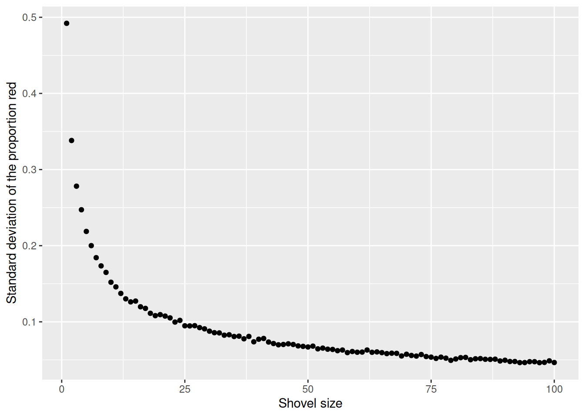

2 Sampling
“The most important aspect of a statistical analysis is not what you do with the data, it’s what data you use.” – Hal Stern
The Hunger Games is a dystopian novel in which children are chosen via lottery to fight to the death. Primrose Everdeen is selected from the urn. Why does she have the misfortune of being selected? Or, as we data scientists say, sampled?
In Chapter 1, we learned about probability, the framework for quantifying uncertainty. In this chapter, we will learn about sampling, the beginning of our journey toward inference. When we sample, we take some units from a population. With the data collected via sampling, we use inference to create statistical models. With such models, we can answer questions.
We always use the Cardinal Virtues. Wisdom helps us to clarify the questions with which we begin. We build the Preceptor Table which, if no data were missing, would allow us to answer the question. We check for validity. Justice creates the Population Table and examines the assumptions of stability, representativeness, and unconfoundedness. With Courage, we create a data generating mechanism. Temperance helps us to use that DGM to answer the question with which we began.
2.1 Real sampling activity
The urn below has a certain number of red and a certain number of white beads all of equal size, mixed well together. What proportion, \(\rho\), of this urn’s beads are red?
One way to answer this question would be to perform an exhaustive count: remove each bead, count the number of red beads, count the number of white beads, and divide the number of red beads by the total number of beads. Call that ratio \(\rho\), the proportion of red beads in the urn. However, this would be a long and tedious process. Therefore, we will use sampling!
To begin this chapter, we will look at a real sampling activity: the urn. Then, we will simulate the urn example using R code. This will help us to understand the standard error and the ways in which uncertainty factors into our predictions.
Use the tidyverse package.
2.1.1 Using the shovel method once
Instead of performing an exhaustive count, let’s insert a shovel into the urn and remove \(5 \cdot 10 = 50\) beads. We are taking a sample of the total population of beads.


Observe that 17 of the 50 sampled beads are red and thus \(17/50 = 0.34 = 34\%\) of the shovel’s beads are red. We can view the proportion of beads that are red in this shovel as a guess at the proportion of beads that are red in the entire urn. While not as exact as doing an exhaustive count of all the beads in the urn, our guess of 34% took much less time and energy to make.
Recall that \(\rho\) is the true value of the proportion of red beads. There is only one \(\rho\). A guess at the proportion of red beads is known as \(\hat{\rho}\) (pronounced p hat), where \(\hat{\rho}\) is the estimated value of \(\rho\). There are many ways to estimate \(\rho\), each leading to a (potentially) different \(\hat{\rho}\). The 34% value for \(\hat{\rho}\) came from taking this sample. But, if we used the shovel again, we would probably come up with a different \(\hat{\rho}\). There are many possible \(\hat{\rho}\)’s. You and I will often differ in our estimates. We might each have a different \(\hat{\rho}\) even though we agree that there is only one \(\rho\).
Start this activity over again from the beginning, placing the 50 beads back into the urn. Would a second sample include exactly 17 red beads? Maybe, but probably not.
What if we repeated this activity many times? Would our guess at the proportion of the urn’s beads that are red, \(\hat{\rho}\), be exactly 34% every time? Surely not.
Let’s repeat this exercise with the help of 33 groups of friends to understand how the value of \(\hat{\rho}\) varies across 33 independent trials.
2.1.2 Using the shovel 33 times
Each of our 33 groups of friends will do the following:
- Use the shovel to remove 50 beads each.
- Count the number of red beads and compute the proportion of the 50 beads that are red.
- Return the beads into the urn.
- Mix the contents of the urn to not let a previous group’s results influence the next group’s.
Each of our 33 groups of friends make note of their proportion of red beads from their sample collected. Each group then marks their proportion of their 50 beads that were red in the appropriate bin in a hand-drawn histogram as seen below.

Histograms allow us to visualize the distribution of a numerical variable. In particular, where the center of the values falls and how the values vary. A partially completed histogram of the first 10 out of 33 groups of friends’ results can be seen in the figure below.

Observe the following details in the histogram:
- At the low end, one group removed 50 beads from the urn with proportion red between 0.20 and 0.25.
- At the high end, another group removed 50 beads from the urn with proportion red between 0.45 and 0.5 red.
- However, the most commonly occurring proportions were around 0.4 red, right in the middle of the distribution.
- The distribution is somewhat bell-shaped.
tactile_sample_urn saves the results from our 33 groups of friends.
# A tibble: 33 × 4
group red_beads prop_red group_ID
<chr> <dbl> <dbl> <int>
1 Griffin, Mary 18 0.36 1
2 Ilyas, Yohan 21 0.42 2
3 Dohyun, Estel 18 0.36 3
4 Sophie, Brian 21 0.42 4
5 Claire, Cloud 16 0.32 5
6 Mal, Francis 17 0.34 6
7 Siobhan, Jane 11 0.22 7
8 Morgan, Emily 21 0.42 8
9 Yao, Kate 23 0.46 9
10 Caroline, Edna 15 0.3 10
# ℹ 23 more rowsFor each group, we are given their names, the number of red_beads they obtained, and the corresponding proportion out of 50 beads that were red, called prop_red. We also have a group_ID variable which gives each of the 33 groups a unique identifier. Each row can be viewed as one instance of a replicated activity: using the shovel to remove 50 beads and computing the proportion of those beads that were red.
Let’s visualize the distribution of these 33 proportions using geom_histogram() with binwidth = 0.05. This is a computerized and complete version of the partially completed hand-drawn histogram you saw earlier.
tactile_sample_urn |>
ggplot(aes(x = prop_red)) +
# Setting `boundary = 0.4` indicates that we want a binning scheme such that
# one of the bins' boundary is at 0.4. `color = "white"` modifies the color of
# the boundary for visual clarity.
geom_histogram(binwidth = 0.05,
boundary = 0.4,
color = "white") +
# Add scale_y_continuous with breaks by 1, as the default shows the y-axis
# from 1 to 10 with breaks at .5. Breaks by 1 is better for this plot, as all
# resulting values are integers.
scale_y_continuous(breaks = seq(from = 0, to = 10, by = 1)) +
# The call expression() is used to insert a mathematical expression, like
# p-hat. The paste after expression allows us to paste text prior to said
# expression.
labs(x = expression(paste("Proportion, ", hat(rho), ", of 50 beads that were red")),
y = "Count",
title = "Proportions Red in 33 Samples") 2.1.3 What did we just do?
What we just demonstrated in this activity is the statistical concept of sampling. We want to know the proportion of red beads in the urn, with the urn being our population. Performing an exhaustive count of the red and white beads would be too time consuming. Therefore, it is much more practical to extract a sample of 50 beads using the shovel. Using this sample of 50 beads, we estimated the proportion of the urn’s beads that are red to be about 34%.
Moreover, because we mixed the beads before each use of the shovel, the samples were random and independent. Because each sample was drawn at random, the samples were different from each other. This is an example of sampling variation. For example, what if instead of selecting 17 beads in our first sample we had selected just 11? Does that mean that the population proportion of the beads is 11/50 or 22%? No! Because we performed 33 trials we can look to our histogram, and see that the peak of the distribution occurs when \(.35 < \hat{\rho} < .4\) , so it is likely that the proportion of red beads in the entire population will also fall in or near this range.
2.2 Virtual sampling
We just performed a tactile sampling activity. We used a physical urn of beads and a physical shovel. We did this by hand so that we could develop our intuition about the ideas behind sampling. In this section, we mimic this physical sampling with virtual sampling, using a computer.
2.2.1 Using the virtual shovel once
Virtual sampling requires a virtual urn and a virtual shovel. Create a tibble named urn. The rows of urn correspond exactly to the contents of the actual urn.
# set.seed() ensures that the beads in our virtual urn are always in the same
# order. This ensures that the figures in the book match their written
# descriptions. We want 40% of the beads to be red.
set.seed(8)
urn <- tibble(color = c(rep("red", 400),
rep("white", 600))) |>
# sample_frac() keeps all the rows in the tibble but rearranges their order.
# We don't need to do this. A virtual urn does not care about the order of the
# beads. But we find it aesthetically pleasing to mix them up.
sample_frac() |>
mutate(bead_ID = 1:1000) |>
select(bead_ID, color)
urn # A tibble: 1,000 × 2
bead_ID color
<int> <chr>
1 1 white
2 2 red
3 3 red
4 4 white
5 5 white
6 6 red
7 7 white
8 8 white
9 9 red
10 10 red
# ℹ 990 more rowsObserve that urn has 1,000 rows, meaning that the urn contains 1,000 beads. The first variable bead_ID is used as an identification variable. None of the beads in the actual urn are marked with numbers. The second variable color indicates whether a particular virtual bead is red or white.
Our virtual urn needs a virtual shovel. We use slice_sample() and some list-column mapping wizardry to take a sample of 50 beads from our virtual urn.
# Define trial_ID as one instance of us sampling 50 beads from the urn. When
# trial_ID is called within map(), we are performing slice_sample() upon our urn
# once, and taking a sample of 50 beads.
tibble(trial_ID = 1) |>
mutate(shovel = map(trial_ID, ~ slice_sample(urn, n = 50)))# A tibble: 1 × 2
trial_ID shovel
<dbl> <list>
1 1 <tibble [50 × 2]>As usual, map functions and list-columns are powerful but confusing. The str() function is a good way to explore a tibble with a list-column.
tibble(trial_ID = 1) |>
mutate(shovel = map(trial_ID, ~ slice_sample(urn, n = 50))) |>
str()tibble [1 × 2] (S3: tbl_df/tbl/data.frame)
$ trial_ID: num 1
$ shovel :List of 1
..$ : tibble [50 × 2] (S3: tbl_df/tbl/data.frame)
.. ..$ bead_ID: int [1:50] 391 171 24 703 399 404 134 145 272 487 ...
.. ..$ color : chr [1:50] "white" "white" "white" "white" ...There are two levels. There is one row in the tibble for each sample. So far, we have only drawn one sample. Within each row, there is a second level, the tibble which is the sample. That tibble has two variables: trial_ID and color. This is the advantage to using slice_sample(), because it selects all columns of our urn, whereas sample() can only sample from a single column. While identifying each individual bead may be irrelevant in our urn scenario, with other problems it could be very useful to have additional data about each individual.
Now let’s add a column which indicates the number of red beads in the sample taken from the shovel.
tibble(trial_ID = 1) |>
mutate(shovel = map(trial_ID, ~ slice_sample(urn, n = 50))) |>
# To count the number of red beads in each shovel, we can use a lesser
# known property of the sum() function: By passing in a comparison
# expression, sum() will count the number of occurrences within a vector.
# In this case, we count the total number occurrences of the word red
# in the color column of shovel.
mutate(numb_red = map_int(shovel, ~ sum(.$color == "red")))# A tibble: 1 × 3
trial_ID shovel numb_red
<dbl> <list> <int>
1 1 <tibble [50 × 2]> 17How does this work? R evaluates if color == red, and treats TRUE values like the number 1 and FALSE values like the number 0. So summing the number of TRUEs and FALSEs is equivalent to summing 1’s and 0’s. In the end, this operation counts the number of beads where color equals “red”.
Finally, calculate the proportion red by dividing numb_red (the number of red beads observed in the shovel) by the shovel size (which is 50 in this example).
# A tibble: 1 × 4
trial_ID shovel numb_red prop_red
<dbl> <list> <int> <dbl>
1 1 <tibble [50 × 2]> 17 0.34Careful readers will note that the numb_red is changing in each example above. The reason, of course, is that each block re-runs the shovel exercise, and slice_sample() will return a random number of red beads. If we wanted the same number in each block, we would need to use the set.seed() function and then set the same seed each time.
Let’s now perform the virtual analog of having 33 groups of students use the sampling shovel.
2.2.2 Using the virtual shovel 33 times
In our tactile sampling exercise in Section 2.1, we had 33 groups of students use the shovel, yielding 33 samples of size 50 beads. We then used these 33 samples to compute 33 proportions.
Let’s use our virtual sampling to replicate the tactile sampling activity in a virtual format. We’ll save these results in a data frame called virtual_samples.
# A tibble: 33 × 4
trial_ID shovel numb_red prop_red
<int> <list> <int> <dbl>
1 1 <tibble [50 × 2]> 21 0.42
2 2 <tibble [50 × 2]> 21 0.42
3 3 <tibble [50 × 2]> 20 0.4
4 4 <tibble [50 × 2]> 17 0.34
5 5 <tibble [50 × 2]> 20 0.4
6 6 <tibble [50 × 2]> 18 0.36
7 7 <tibble [50 × 2]> 24 0.48
8 8 <tibble [50 × 2]> 21 0.42
9 9 <tibble [50 × 2]> 17 0.34
10 10 <tibble [50 × 2]> 21 0.42
# ℹ 23 more rowsLet’s visualize this variation in a histogram:
virtual_samples |>
ggplot(aes(x = prop_red)) +
geom_histogram(binwidth = 0.05,
boundary = 0.4,
color = "white") +
# To use mathematical symbols in titles and labels, use the expression()
# function, as here.
labs(x = expression(paste("Proportion, ", hat(rho), ", of 50 beads that were red")),
y = "Count",
title = "Distribution of 33 proportions red") +
# Label the y-axis in an attractive fashion. Without this code, the axis
# labels would include 2.5, which makes no sense because all the values are
# integers.
scale_y_continuous(breaks = seq(2, 10, 2))
Since binwidth = 0.05, this will create bins with boundaries at 0.30, 0.35, 0.45, and so on. Recall that \(\hat{\rho}\) is equal to the proportion of beads which are red in each sample.
Observe that we occasionally obtained proportions red that are less than 30%. On the other hand, we occasionally obtained proportions that are greater than 45%. However, the most frequently occurring proportions were between 35% and 45%. Why do we have these differences in proportions red? Because of sampling variation.
Now we will compare our virtual results with our tactile results from the previous section. Observe that both histograms are somewhat similar in their center and variation, although not identical. These slight differences are again due to random sampling variation. Furthermore, observe that both distributions are somewhat bell-shaped.
This visualization allows us to see how our results differed between our tactile and virtual urn results. As we can see, there is some variation between our results. This is not a cause for concern, as there is always sampling variation across results.
2.2.3 Using the virtual shovel 10,000 times
Although we took 33 samples from the urn in the previous section, we should not use so few samples. Instead, in this section we’ll examine the effects of sampling from the urn 10,000 times.
We can reuse our code from above, making sure to replace 33 trials with 10,000.
Now we have 10,000 values for prop_red, each representing the proportion of 50 beads that are red in a sample. Using the same code as earlier, let’s visualize the distribution of these 10,000 replicates of prop_red in a histogram:
virtual_samples |>
ggplot(aes(x = prop_red)) +
geom_histogram(binwidth = 0.01,
boundary = 0.4,
color = "white") +
labs(x = expression(hat(rho)),
y = "Count",
title = "Distribution of 10,000 proportions red") Why the empty spaces among the bars? Recall that, with only 50 beads, there are only 51 possible values for \(\hat{\rho}\): 0, 0.02, 0.04, …, 0.98, 1. A value of 0.31 or 0.47 is impossible, hence the gaps.
The most frequently occurring proportions of red beads occur, again, between 35% and 45%. Every now and then we observe proportions much higher or lower. This occurs because as we increase the number of trials, tails develop on our distribution as we are more likely to witness extreme \(\hat{\rho}\) values. The symmetric, bell-shaped distribution shown in the histogram is well approximated by the normal distribution.
Now that we have a good understanding of virtual sampling, we can apply our knowledge to examine the effects of changing our virtual shovel size.
2.2.4 The effect of different shovel sizes

Instead of just one shovel, imagine we have three choices of shovels with which to extract a sample of beads: shovels of size 25, 50, and 100. Using our newly developed tools for virtual sampling, let’s unpack the effect of having different sample sizes. Start by creating a tibble with 10,000 rows, each row representing an instance of us sampling from the urn with our chosen shovel size. Then, compute the resulting 10,000 replicates of proportion red. Finally, plot the distribution using a histogram.
# Within slice_sample(), n = 25 represents our shovel of size 25. We also divide
# by 25 to compute the proportion red.
virtual_samples_25 <- tibble(trial_ID = 1:10000) |>
mutate(shovel = map(trial_ID, ~ slice_sample(urn, n = 25))) |>
mutate(numb_red = map_int(shovel, ~ sum(.$color == "red"))) |>
mutate(prop_red = numb_red / 25)
virtual_samples_25 |>
ggplot(aes(x = prop_red)) +
geom_histogram(binwidth = 0.04,
boundary = 0.4,
color = "white") +
labs(x = expression(paste("Proportion, ", hat(rho), ", of 25 beads that were red")),
title = "25") We will repeat this process with a shovel size of 50.
virtual_samples_50 <- tibble(trial_ID = 1:10000) |>
mutate(shovel = map(trial_ID, ~ slice_sample(urn, n = 50))) |>
mutate(numb_red = map_int(shovel, ~ sum(.$color == "red"))) |>
mutate(prop_red = numb_red / 50)
virtual_samples_50 |>
ggplot(aes(x = prop_red)) +
geom_histogram(binwidth = 0.04,
boundary = 0.4,
color = "white") +
labs(x = expression(paste("Proportion, ", hat(rho), ", of 50 beads that were red")),
title = "50") We choose a bin width of .04 for all histograms to more easily compare different shovel sizes. Using a smaller bin size would result in gaps between the bars, as a shovel of size 50 has more possible \(\hat{\rho}\) values than a shovel of size 25.
Finally, we will perform the same process with 10,000 replicates to map the histogram using a shovel size of 100.
virtual_samples_100 <- tibble(trial_ID = 1:10000) |>
mutate(shovel = map(trial_ID, ~ slice_sample(urn, n = 100))) |>
mutate(numb_red = map_int(shovel, ~ sum(.$color == "red"))) |>
mutate(prop_red = numb_red / 100)
virtual_samples_100 |>
ggplot(aes(x = prop_red)) +
geom_histogram(binwidth = 0.04,
boundary = 0.4,
color = "white") +
labs(x = expression(paste("Proportion, ", hat(rho), ", of 100 beads that were red")),
title = "100") For easy comparison, we present the three resulting histograms in a single row with matching x and y axes:
# Use bind_rows to combine the data from our three saved virtual sampling
# objects. Use mutate() in each to clarify the n as the necessary number
# of samples taken. This makes our data easier to interpret and prevents
# duplicate elements.
virtual_prop <- bind_rows(virtual_samples_25 |>
mutate(n = 25),
virtual_samples_50 |>
mutate(n = 50),
virtual_samples_100 |>
mutate(n = 100))
# Plot our new object with the x-axis showing prop_red. Add elements binwidth,
# boundary, and color for stylistic clarity. Use labs() to add an x-axis label
# and title. Facet_wrap() splits the graph into multiple plots by the variable
# (~n).
comparing_sampling_distributions <- ggplot(virtual_prop, aes(x = prop_red)) +
geom_histogram(binwidth = 0.04, boundary = 0.4, color = "white") +
labs(x = expression(paste("Proportion, ", hat(rho), ", of the beads that were red")),
title = "Comparing distributions of proportions red for three different shovel sizes.") +
facet_wrap(~ n)
# Inspect our new faceted graph.
comparing_sampling_distributionsObserve that as the sample size increases, the histogram becomes taller and narrower. This is because the variation of the proportion red for each sample decreases. Remember: A large variation means there are a wide range of values that might occur, while smaller variations are more concentrated around the central value.
The Central Limit Theorem states, more or less, that when sample means are based on larger and larger sample sizes, the sampling distribution of these sample means becomes both narrower and more bell-shaped. In other words, the sampling distribution increasingly follows a normal distribution and the variation of this sampling distribution gets smaller.
Why does variation decrease as sample size increases? If we use a large sample size like 100 or 500, our sample is much more representative of the population. As a result, the proportion red in our sample (\(\hat{\rho}\)) will be closer to the true population proportion (\(\rho\)). On the other hand, smaller samples have much more variation because of chance. We are much more likely to have extreme estimates that are not representative of our population when the sample size is small.
Let’s attempt to visualize the concept of variation a different way. For each sample size, let’s plot the proportion red for all 10,000 samples. With 3 different shovel sizes, we will have 30,000 total points, with each point representing an instance of sampling from the urn with a specific shovel size.
virtual_prop |>
ggplot(aes(x = n, y = prop_red, color = as.factor(n))) +
geom_jitter(alpha = .15) +
labs(title = "Results of 10,000 samples for 3 different shovel sizes.",
subtitle = "As shovel size increases, variation decreases.",
y = "Proportion red in sample",
color = "Shovel size") +
# We do not need an x axis, because the color of the points denotes the shovel size.
theme(axis.title.x = element_blank(),
axis.text.x = element_blank(),
axis.ticks.x = element_blank())
This graph illustrates the exact same concept as the histogram. With the smallest shovel size, there is significant variance from sample to sample, as samples feature, by chance, some extreme results. However, as we increase the sample size, the points become more concentrated, i.e., they demonstrate less variance.
There is also a third way to understand variation. We can be numerically explicit about the amount of variation in our three sets of 10,000 values of prop_red by using the standard deviation. A standard deviation is a summary statistic that measures the amount of variation within a numeric vector. For all three sample sizes, let’s compute the standard deviation of the 10,000 proportions red.
| Comparing standard deviations of proportions red for three different shovels | |
| Number of slots in shovel | Standard deviation of proportions red |
|---|---|
| 25 | 0.098 |
| 50 | 0.068 |
| 100 | 0.046 |
Comparing the number of slots in the shovel with the standard deviation of proportions red. Here, we see that standard deviation decreases with higher sample sizes. Larger sample sizes yield more precise estimates.
As the sample size increases, the sample-to-sample variation decreases, and our guesses at the true proportion of the urn’s beads that are red get more precise. The larger the shovel, the more precise the result.
Let’s take a step back from all the variance. The reality is that our code needs to be better optimized, as it is bad practice to make a separate tibble for each sample size. To make comparisons easier, let’s attempt to put all 3 shovel sizes in the same tibble using mapping.
# A tibble: 30,000 × 5
trial_ID shovel_ID samples num_red prop_red
<int> <dbl> <list> <int> <dbl>
1 1 25 <tibble [25 × 2]> 13 0.52
2 1 50 <tibble [50 × 2]> 27 0.54
3 1 100 <tibble [100 × 2]> 49 0.49
4 2 25 <tibble [25 × 2]> 12 0.48
5 2 50 <tibble [50 × 2]> 22 0.44
6 2 100 <tibble [100 × 2]> 33 0.33
7 3 25 <tibble [25 × 2]> 11 0.44
8 3 50 <tibble [50 × 2]> 16 0.32
9 3 100 <tibble [100 × 2]> 33 0.33
10 4 25 <tibble [25 × 2]> 13 0.52
# ℹ 29,990 more rowsTo those of us who do not completely understand mapping, do not fret! The tidyr package provides the expand_grid() function as a neat alternative. We can use expand_grid() and a new variable, shovel_size, to create a tibble which will organize our results. Instead of using 1,000 trials, let’s use 3 to get a feel for the function.
expand_grid(trial_ID = c(1:3), shovel_size = c(25, 50, 100))# A tibble: 9 × 2
trial_ID shovel_size
<int> <dbl>
1 1 25
2 1 50
3 1 100
4 2 25
5 2 50
6 2 100
7 3 25
8 3 50
9 3 100The above sets the stage for simulating three samples for each of three different shovel sizes. Similar code as above can be used.
expand_grid(trial_ID = c(1:3), shovel_size = c(25, 50, 100)) |>
mutate(shovel = map(shovel_size, ~ slice_sample(urn, n = .))) |>
mutate(numb_red = map_int(shovel, ~ sum(.$color == "red"))) |>
mutate(prop_red = numb_red/shovel_size) # A tibble: 9 × 5
trial_ID shovel_size shovel numb_red prop_red
<int> <dbl> <list> <int> <dbl>
1 1 25 <tibble [25 × 2]> 9 0.36
2 1 50 <tibble [50 × 2]> 20 0.4
3 1 100 <tibble [100 × 2]> 46 0.46
4 2 25 <tibble [25 × 2]> 7 0.28
5 2 50 <tibble [50 × 2]> 12 0.24
6 2 100 <tibble [100 × 2]> 35 0.35
7 3 25 <tibble [25 × 2]> 14 0.56
8 3 50 <tibble [50 × 2]> 16 0.32
9 3 100 <tibble [100 × 2]> 34 0.34Again, we changed the second line to use shovel_size rather than trial_ID as the mapping variable since we can no longer hard code the shovel size into the call to slice_sample(). Expand to 1,000 simulations for each value of shovel_size and finish with a calculation of standard deviation.
# A tibble: 3 × 2
shovel_size st_dev_p_hat
<dbl> <dbl>
1 25 0.0964
2 50 0.0675
3 100 0.0465This is, approximately, the same result as we saw above, but with one re-factored tibble instead of three separate ones. Use functions like expand_grid() in the future to make your code more concise.
Now that we have this framework, there’s no need to limit ourselves to the sizes 25, 50, and 100. Why not try all integers from 1 to 100? We can use the same code, except we’ll now set shovel_size = 1:100. (We also decrease the number of replications from 10,000 to 1,000 in order to save time.)
shovels_100 <- expand_grid(trial_ID = c(1:1000), shovel_size = c(1:100)) |>
mutate(shovel = map(shovel_size, ~ slice_sample(urn, n = .))) |>
mutate(numb_red = map_int(shovel, ~ sum(.$color == "red"))) |>
mutate(prop_red = numb_red / shovel_size) |>
summarize(st_dev_p_hat = sd(prop_red),
.by = shovel_size)
glimpse(shovels_100)Rows: 100
Columns: 2
$ shovel_size <int> 1, 2, 3, 4, 5, 6, 7, 8, 9, 10, 11, 12, 13, 14, 15, 16, 17…
$ st_dev_p_hat <dbl> 0.49207941, 0.33817764, 0.27815410, 0.24720459, 0.2187414…Now, we have the standard deviation of prop_red for all shovel sizes from 1 to 100. Let’s plot that value to see how it changes as the shovel gets larger:
The red line here represents an important statistical concept: standard error (SE). As the shovel size increases, and thus our sample size increases, we find that the standard error decreases.
This is the power of running many analyses at once using map functions and list columns: before, we could tell that the standard deviation was decreasing as the shovel size increased, but when only looking at shovel sizes of 25, 50, and 100, it wasn’t clear how quickly it was decreasing.
2.3 Standard error
Standard errors (SE) quantify the effect of sampling variation on our estimates. In other words, they quantify how much we can expect the calculated proportions of a shovel’s beads that are red to vary from one sample to another sample to another sample. As sample size increases, the standard error decreases.
The standard error is the standard deviation of a sample statistic such as the estimated proportion. For example, the standard error of the mean refers to the standard deviation of the distribution of sample means taken from a population.
The relationship between the standard error and the standard deviation is that, for a given sample size, the standard error equals the standard deviation of the data divided by the square root of the sample size. Accordingly, the standard error is inversely proportional to the square root of the sample size. The larger the sample size, the smaller the standard error.
2.3.1 Terminology and notation
A population is the set of relevant units. The population’s size is upper-case \(N\). In our sampling activities, the population is the collection of \(N\) = 1,000 identically-sized red and white beads in the urn. This is about the simplest possible population. Other examples are all the adult men in the US, all the classrooms in a school, all the wheelbarrows in Massachusetts, all the values of your blood pressure, read at five minute intervals, for your entire life. Often, the population extends over time, as with your blood pressure readings and is, therefore, more amorphous. Consider all the people who have run for governor of a US state since 1900, or all the people who will run for governor through 2050. Those are also populations.
A population parameter is a numeric statistic about the population that is unknown, but you wish you knew. For example, when this quantity is the mean, the population parameter of interest is the population mean. This is mathematically denoted with the Greek letter \(\mu\) pronounced “mu.” In our earlier sampling-from-the-urn activity, however, since we were interested in the proportion of the urn’s beads that were red, the population parameter is the population proportion of interest, denoted by \(\rho\). Different academic fields often use different Greek letters to denote the same population parameter.
A census is an exhaustive enumeration or counting of all \(N\) units in the population in order to compute the population parameter’s value exactly. In our sampling activity, this would correspond to counting the number of red beads out of the \(N\) total in the urn and then computing the red population proportion, \(\rho\), exactly. When the number \(N\) of individuals or observations in our population is large as was the case with our urn, a census can be quite expensive in terms of time, energy, and money. A census is impossible for any population which includes the future, like our blood pressure next year or candidates for governor in 2050. There is a truth, but we could not, even in theory, determine it.
Sampling is the act of collecting a sample from the population when we can not, or do not want to, perform a census. The sample size is lower case \(n\), as opposed to upper case \(N\) for the population’s size. Typically the sample size \(n\) is much smaller than the population size \(N\). In our sampling activities, we used shovels with varying slots to extract samples of size \(n = 1\) through \(n = 100\).
A point estimate, also known as a sample statistic, is a measure computed from a sample that estimates an unknown population parameter. In our sampling activities, recall that the unknown population parameter was the proportion of red beads and that this is denoted by \(\rho\). Our point estimate is the sample proportion: the proportion of the shovel’s beads that are red. In other words, it is our guess at the proportion of the urn’s beads that are red. The point estimate of the parameter \(\rho\) is \(\hat{\rho}\). The “hat” on top of the \(\rho\) indicates that it is an estimate of the unknown population proportion \(\rho\).
A sample is said to be representative if it roughly looks like the population. In other words, are the sample’s characteristics a good representation of the population’s characteristics? In our sampling activity, are the samples of \(n\) beads extracted using our shovels representative of the urn’s \(N = 1,000\) beads?
A sample is generalizable if any results based on the sample can generalize to the population. In our sampling activity, can we generalize the sample proportion from our shovels to the entire urn? Using our mathematical notation, this is akin to asking if \(\hat{\rho}\) is a “good guess” of \(\rho\).
Biased sampling occurs if certain individuals or observations in a population have a higher chance of being included in a sample than others. We say a sampling procedure is unbiased if every observation in a population had an equal chance of being sampled. Had the red beads been much smaller than the white beads, and therefore more prone to falling out of the shovel, our sample would have been biased. In our sampling activities, since we mixed all \(N = 1,000\) beads prior to each group’s sampling and since each of the beads had an equal chance of being sampled, our samples were unbiased.
A sampling procedure is random if we sample randomly from the population in an unbiased fashion. With random sampling, each unit has an equal chance of being selected into the sample. This condition entails, among other things, sufficiently mixing the urn before each use of the shovel.
In general:
- If the sampling of a sample of size \(n\) is done at random, then
- the sample is unbiased and representative of the population of size \(N\), thus
- any result based on the sample can generalize to the population, thus
- the point estimate is a “good guess” of the unknown population parameter, thus
- instead of performing a census, we can draw inferences about the population using sampling.
Specific to our sampling activity:
- If we extract a sample of \(n=50\) beads at random, in other words, we mix all of the equally-sized beads before using the shovel, then
- the contents of the shovel are an unbiased representation of the contents of the urn’s 1,000 beads, thus
- any result based on the shovel’s beads can generalize to the urn, thus
- the sample proportion \(\hat{\rho}\) of the \(n=50\) beads in the shovel that are red is a “good guess” of the population proportion \(\rho\) of the \(N=1,000\) beads that are red, thus
- instead of manually going over all 1,000 beads in the urn, we can make inferences about the urn by using the results from the shovel.
2.3.2 Statistical definitions
For our 1,000 repeated/replicated virtual samples of size \(n = 25\), \(n = 50\), and \(n = 100\) in Section 2.2, let’s display our figure showing the difference in proportions red according to different shovel sizes.

These types of distributions have a special name: sampling distributions. The visualization displays the effect of sampling variation on the distribution of a point estimate: the sample proportion \(\hat{\rho}\). Using these sampling distributions, for a given sample size \(n\), we can make statements about what range of values we typically expect.
For example, observe the centers of all three sampling distributions: all around \(0.4 = 40\%\). Furthermore, observe that while we are somewhat likely to observe sample proportions of red beads of \(0.2 = 20\%\) when using the shovel with 25 slots, we will almost never observe a proportion of 20% when using the shovel with 100 slots. Observe also the effect of sample size on the sampling variation. As the sample size \(n\) increases from 25 to 50 to 100, the variation of the sampling distributions decreases and thus the values cluster more and more tightly around the same center: about 40%.

As the sample size increases, the standard deviation of the proportion of red beads across the 1,000 replications decreases. This type of standard deviation has another special name: standard error
2.3.3 What is a standard error?
The standard error (SE) is the standard deviation of a sample statistic (aka point estimate), such as the mean or median. For example, the “standard error of the mean” refers to the standard deviation of the distribution of sample means taken from a population.
In statistics, a sample mean deviates from the actual mean of a population; this deviation is the standard error of the mean.
Many students struggle to differentiate the standard error from the standard deviation. The relationship between the standard error and the standard deviation is such that, for a given sample size, the standard error equals the standard deviation divided by the square root of the sample size.
Larger sample size = smaller standard error = more representative of the truth.
To help reinforce these concepts, let’s re-display our previous figure but using our new sampling terminology, notation, and definitions:
Furthermore, let’s display the graph of standard errors for \(n = 1\) to \(n = 100\) using our new terminology, notation, and definitions relating to sampling.
As the sample size \(n\) goes up, the “typical” error of your point estimate will go down, as quantified by the standard error.
2.3.4 The moral of the story
Standard error is just a fancy term for your uncertainty about something you don’t know. Standard error is the precision of our (uncertain) beliefs.
This hierarchy represents the knowledge we need to understand standard errors. At the bottom, we have math. It’s the foundation for our understanding, but it doesn’t need to be what we take away from this lesson. As we go up, we simplify the topic. The top of the pyramid are the most basic levels of understanding.
If I know your estimate plus or minus two standard errors, I know your 95% confidence interval. This is valuable information. Standard error is really just a measure for how uncertain we are about something we do not know, the thing we are estimating. Speaking snarkily, standard error is the way old people talk about confidence intervals.
Recall that \(\hat{\rho}\) is the estimated value of p which comes from taking a sample. There can be billions and billions of \(\hat{\rho}\)’s. We look at a large group of \(\hat{\rho}\)’s, create a distribution of results to represent the possible values of \(\rho\) based on our findings, and then we compute a standard error to account for our own uncertainty about our estimates. Our 95% confidence interval for our prediction is our estimate plus or minus two standard errors.
You must understand what the standard error of \(\hat{\rho}\) means. You do not need to understand why.
Central lesson: Your posterior for (almost) any population parameter is normally distributed with a mean equal to the sample mean and a standard deviation equal to the standard error. And that means that your posterior has the same shape as the sampling distribution.